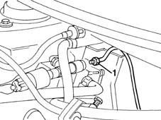
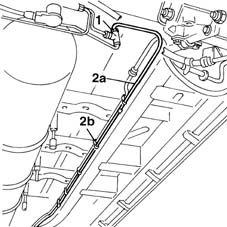
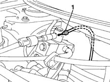
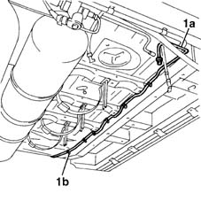
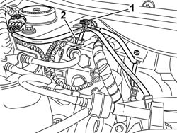
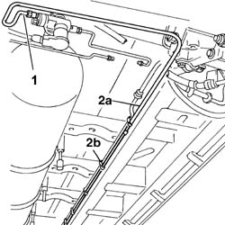

1042B10 CNG SUPPLY LINE FROM SOLENOID TO PRESSURE REDUCTION UNIT - R R
- Path
- Procedures > 10 ENGINE UNIT > 1042 METHANE GAS CANNISTER AND TUBES > 1042B GAS CIRCUIT TUBES AND PIPES > 1042B10 CNG SUPPLY LINE FROM SOLENOID TO PRESSURE REDUCTION UNIT - R R
- Kind
- repair procedure (removal / refitting; the operation number is the code)
- Applies to
- engines: 1.6 16v; all production periods
- Interactive page
- https://sloeber94.github.io/elrnDB-fMltpl/en/#/2891471
Applies to: engines: 1.6 16v; production: fino a 05/04; only with equipment: BIPOWER
 Removing
Removing
 Refitting
RefittingPlace the car on a ramp.
Disconnect the battery negative terminal.
Op. 1042E60 CNG CYLINDER UNIT PROTECTION SEAL - R R
1. Open the bonnet lid and disconnect the pipe from the pressure reducer.

Applies to: engines: 1.6 16v; production: fino a 05/04; only with equipment: BIPOWER
Raise the car.
1. Undo the connector for the pipe from the connector on the three-way connector.
2. Remove the pipe (2a) releasing it from the retaining bands (2b) on the bodyshell and from the retaining bands inside the engine compartment, then remove the pipe from the rear part of the vehicle

Applies to: engines: 1.6 16v; production: fino a 05/04; only with equipment: BIPOWER
Refitting
RemovingFit the CNG supply pipe and secure it to the bands on the bodyshell.
Connect the pipe to the three-way connector.
 | Fastening | Component | Ø | Value (daNm) |
|---|---|---|---|---|
- | Nut | CNG REPRESSURIZING PIPE CONNECTORS | M10 | 2.5 |
Connect the pipe to the connector on the pressure reducer.
Tighten the fixing nut to torque.
| Fastening | Component | Ø | Value (daNm) |
|---|---|---|---|---|
- | Nut | DELIVERY LINE FROM SOLENOID TO REGULATOR | M10 | 2.5 |
Applies to: engines: 1.6 16v; production: fino a 05/04; only with equipment: BLUPOWER
Removing
RefittingPlace the car on a ramp.
Disconnect the battery negative terminal.
Op. 1042E60 CNG CYLINDER UNIT PROTECTION SEAL - R R
Op. 1042A17 SIDE CYLINDER (1), LH OR RH OF CNG CYLINDER UNIT - R R
1. Open the bonnet lid and disconnect the pipe from the pressure reducer.

Applies to: engines: 1.6 16v; production: fino a 05/04; only with equipment: BLUPOWER
Raise the car.
1. Remove the pipe (1a) releasing it from the retaining bands (1b) on the bodyshell and from the retaining bands inside the engine compartment, then remove the pipe from the rear part of the vehicle

Applies to: engines: 1.6 16v; production: fino a 05/04; only with equipment: BLUPOWER
Refitting
RemovingFit the CNG supply pipe and secure it to the bands on the bodyshell.
Connect the pipe to the connector on the pressure reducer.
Tighten the fixing nut to torque.
| Fastening | Component | Ø | Value (daNm) |
|---|---|---|---|---|
- | Nut | DELIVERY LINE FROM SOLENOID TO REGULATOR | M10 | 2.5 |
Op. 1042A17 SIDE CYLINDER (1), LH OR RH OF CNG CYLINDER UNIT - R R
Applies to: engines: 1.6 16v; production: da 06/04; only with equipment: BIPOWER
Removing
RefittingPosition the vehicle on a lift.
Proceed with draining the high pressure circuit following the instructions in the specific operation
Op. 1042A02 C.N.G. - FUEL SYSTEM SAFETY CHECK
Op. 1042E60 CNG CYLINDER UNIT PROTECTION SEAL - R R
Op. 1042A74 RIGHT CYLINDER OF CNG CYLINDER UNIT R R
1. Release the electrical wiring from the retaining clip.
2. Undo the high pressure pipe connector on the pressure reduction unit; release the pipe from the clips retaining it to the bodyshell.

Applies to: engines: 1.6 16v; production: da 06/04; only with equipment: BIPOWER
Raise the vehicle.
1. Undo the pipe connector from the attachment on the centre canister solenoid valve.
2. Remove the pipe (2a) releasing it from the retaining bands (2b) on the bodyshell and from the retaining bands inside the engine compartment, remove the pipe from the rear of the vehicle

Applies to: engines: 1.6 16v; production: da 06/04; only with equipment: BIPOWER
Refitting
RemovingCheck the condition of the CNG supply pipe.
Fit the CNG supply pipe and secure it to the bands on the bodyshell.
Connect the pipe to the connector on the centre canister solenoid valve.
Fastening | Component | Ø | Value (daNm) | |
|---|---|---|---|---|
- | Nut | CNG RECHARGING PIPE CONNECTION | M10 | 2.5 |
Connect the pipe to the connector on the pressure reduction unit.
Tighten the fixing nut to torque.
Fastening | Component | Ø | Value (daNm) | |
|---|---|---|---|---|
- | Nut | DELIVERY LINE FROM SOLENOID TO REGULATOR | M10 | 2.5 |
Op. 1042A74 RIGHT CYLINDER OF CNG CYLINDER UNIT R R
Move the CNG cut-off solenoids to open position by hand and check system is efficient.
Connect the Examiner diagnostic equipment in the "Active Diagnosis" ambient, select and carry out "Gas solenoid valve relay" item in order to allow the opening of the solenoid valves and the renewal of the CNG system operating pressure; read the pressure value on the sensor located on the pressure reduction unit in the engine compartment which should be greater than or equal to 14 bar, otherwise it will not be possible to switch from petrol to methane.
Op. 1042A06 C.N.G. - FUEL SYSTEM CHECK FOR ANY LEAKS USING ELECTRONIC DETECTOR FOLLOWING OPERATIONS
Topics linked from this page (5)
- 1042A02 C.N.G. - FUEL SYSTEM SAFETY CHECK
- 1042A06 C.N.G. - FUEL SYSTEM CHECK FOR ANY LEAKS USING ELECTRONIC DETECTOR FOLLOWING OPERATIONS
- 1042A17 (One), side CANISTER left or right, for CNG CANISTER ASSEMBLY - R.R.
- 1042A74 RIGHT CYLINDER OF CNG CYLINDER UNIT R R
- 1042E60 CNG CANISTER ASSEMBLY SHIELD/PROTECTION / - R.R.